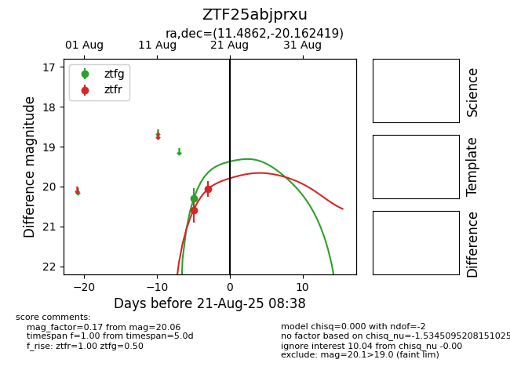

Target ZTF25abjprxu at 2025-08-21 08:38, see:
FINK: fink-portal.org/ZTF25abjprxu
Lasair: lasair-ztf.lsst.ac.uk/objects/ZTF25abjprxu
ALeRCE: alerce.online/object/ZTF25abjprxu
alt names
ZTF25abjprxu (ztf,alerce)
coordinates:
equatorial (ra, dec) = (11.4862,-20.16242)
galactic (l, b) = (112.4121,-82.92170)
photometry
last ztfg=20.30, ztfr=20.06
1 ztfg, 2 ztfr detections
